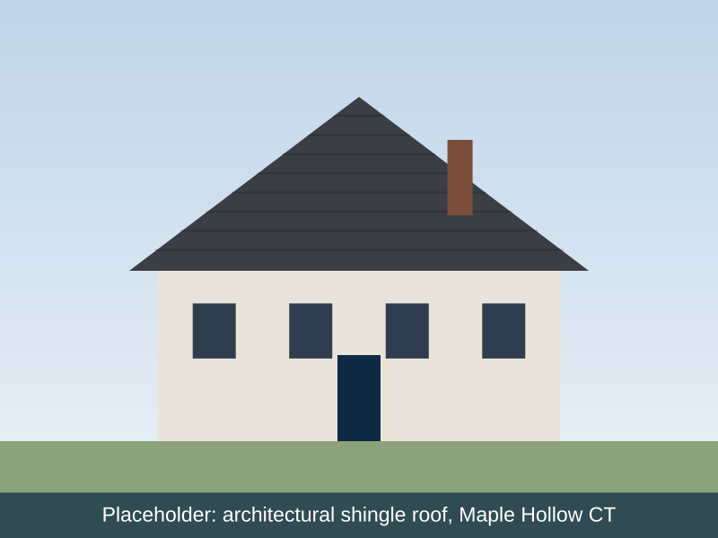
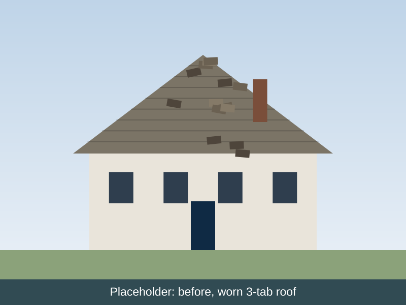
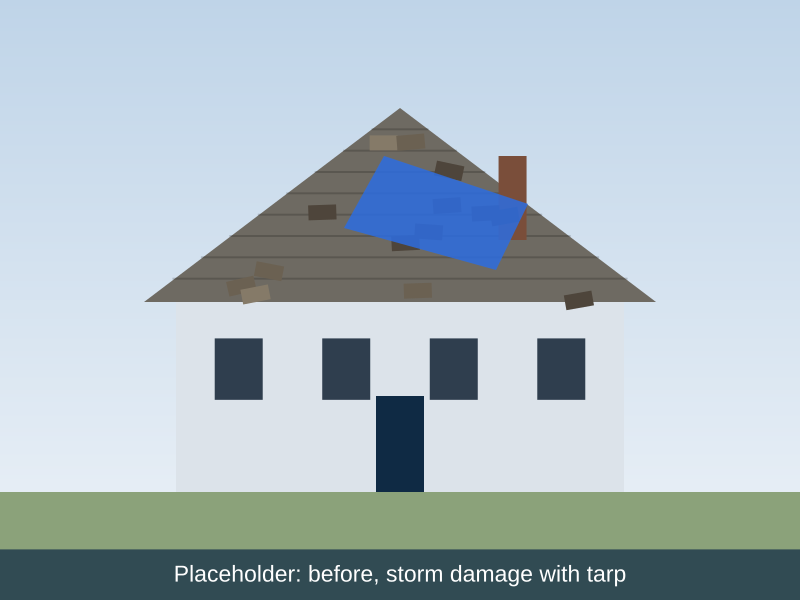
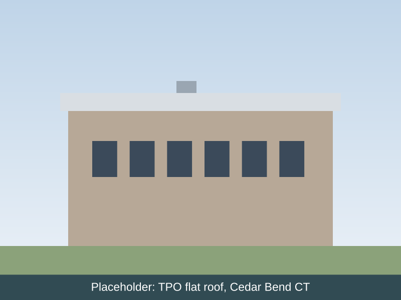
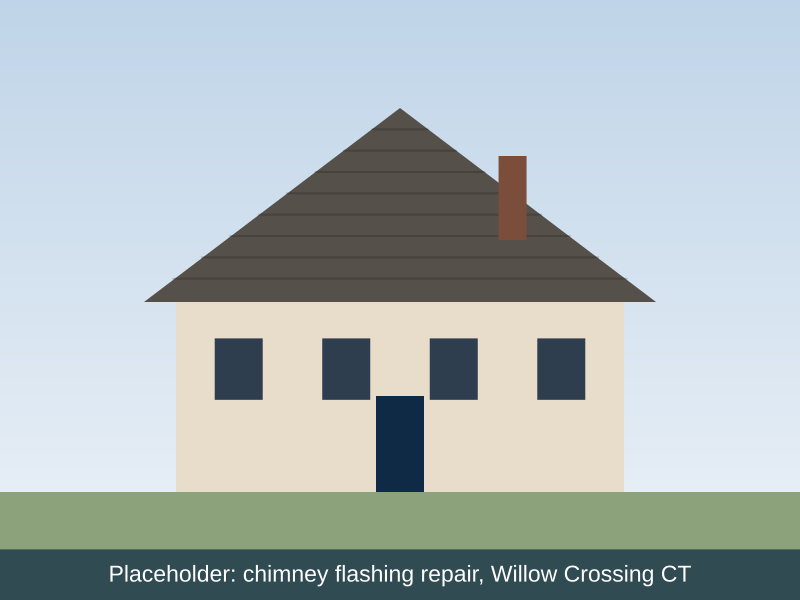
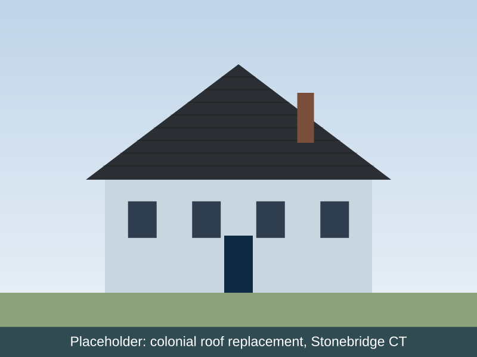
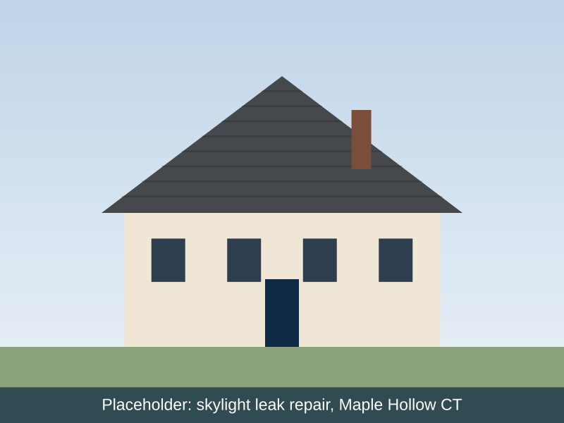
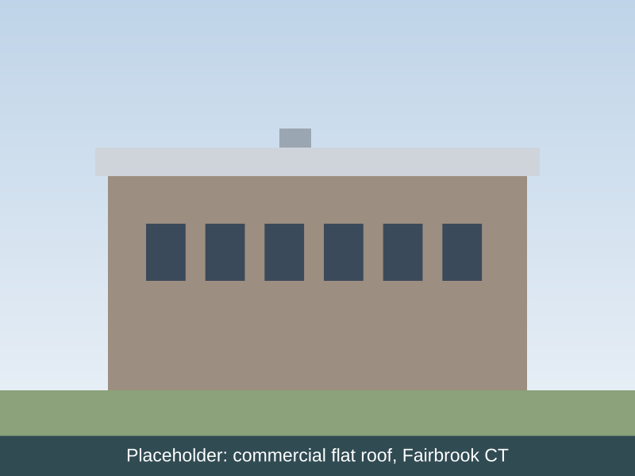
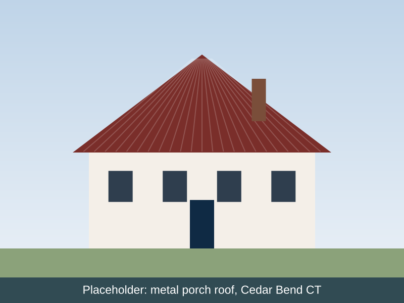

Our Roofing Projects
Recent roofs from around Maple Hollow and Hartwell County. Tap any project for details and before/after photos, or filter by type.
Project gallery
-

Architectural Shingle Replacement Maple Hollow, CT Project details

Before AfterA 22-year-old 3-tab roof with two layers torn off, rotted decking replaced, and new architectural shingles with ice-and-water shield. Completed in two days.
-

Standing Seam Metal Roof Fairbrook, CT Project details
A full standing-seam roof in slate blue, with snow guards above the entry and new ridge venting.
-

Storm Damage Rebuild Ashby Falls, CT Project details

Before
After
Tarped the same afternoon as the windstorm. We met the adjuster two days later, and the claim covered a full replacement minus the deductible.
-

TPO Flat Roof Cedar Bend, CT Project details
Replaced a ponding tar-and-gravel roof with tapered insulation and a white TPO membrane.
-

Chimney Flashing Repair Willow Crossing, CT Project details
Traced a recurring ceiling stain to failed chimney flashing. Installed new step and counter flashing for $780 instead of a new roof.
-

Colonial Roof Replacement Stonebridge, CT Project details
A complete tear-off and charcoal architectural shingle roof, with new gutters coordinated in the same visit.
- Get a Free Estimate for Your Roof
-

Skylight Leak Repair Maple Hollow, CT Project details
Re-flashed two leaking skylights and replaced the surrounding shingles to match.
-

Commercial Flat Roof Fairbrook, CT Project details
A 4,200 sq ft EPDM roof on a retail building, installed over a weekend so the shops stayed open.
-

Metal Porch Roof Cedar Bend, CT Project details
A barn-red standing-seam porch roof, an accent that also ended years of ice dams over the front steps.
Not sure what your roof needs? Start with a free inspection.
We'll get on the roof, take photos, and give you a written estimate with no pressure and no obligation. Most inspections are scheduled within 48 hours.